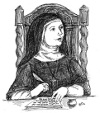

Günümüzde Roma Katolik Kilisesi tarihinin en etkili kadınlarından biri olarak görülen Azize Avilalı Teresa (1515-1582), yaşadığı dönemde düşmanlık ve şüpheyle karşılandı. Engizisyonda yargılandı. Mistik deneyimleriyle dalga geçildi. Bir kilise görevlisi tarafından “dengesiz, rahatsız, asi ve inatçı bir kadın” olmakla suçlandı.

Alay konusu olmasına rağmen Teresa yeni bir tarikat kurdu. Katolik mistisizminin önde gelen teologlarından biri olarak önemli bir miras bıraktı.
Geleceğin azizesinin asıl adı Doña Teresa de Cepeda y Ahumada’dır. İspanya’daki Castille’de asil bir ailenin çocuğu olarak dünyaya geldi. Gizlice eski dinini yaşadığı gerekçesiyle Engizisyon tarafından suçlanmış bir Yahudi dönmesinin torunuydu. Teresa sıkı bir Katolik olarak yetiştirildi. Koyu inançlıydı. O kadar ki yedi yaşında Moorlar’a karşı savaşarak şehit olmak için evden kaçmaya çalışmıştı.
İsyankar genç kız yirmi yaşında Avila’daki Carmelite Manastırı’na girdi. Bu dönemde rahibelik, seçkin ailelerin evlenmemiş itaatsiz kızları için hapishaneden farksızdı. Teresa üç yıl sonra ciddi bir rahatsızlık geçirince dine yönelik ilgisi arttı.
Manastır hayatını daha büyük bir ciddiyetle ele almaya karar vermişti. 1562 yılında ilk “Yalınayak” Carmelite Manastırı’nı Avila’da kurdu. Teresa ve bir avuç takipçisi sadece paçavralar giyiyor, saman döşeklerde uyuyor ve kendilerini kamçılayarak cezalandırıyorlardı.
Aynı dönemde Teresa’nın yaşadığı mistik deneyimler ününün daha da artmasına neden oldu. Kendisi bu ruhsal olaylar yaşandığı sırada Tanrı ile birleştiğine inanıyordu. Ölümüne yakın onu eleştirenlerin muhalefetini aşmayı başardı. İspanya’da on yedi manastır açmıştı. Hıristiyan mistisizmi ile ilgili yazdıkları kendisinden sonra gelen teologlar üzerinde etkili oldu.
Ek Bilgiler
1- Teresa kilise doktoru unvanını kazanan üç kadından biridir. Kilise doktorluğu Katolik teologların ulaşabileceği en üst mertebedir. Kilise doktroluğu unvanına sahip olan diğer iki kadın Sienalı Azize Catherine (1347–1380) ve Lisieuxlu Azize Therese’dir (1873–1897).
2- Teresa 1622 yılında Papa 15. Gregory (1554–1623) tarafından azize ilan edilmiştir. Başı ağrıyanların ve İspanya’nın koruyucu azizesidir.
3- Ölümünün ardından Teresa’nın bedeni parçalara ayrılarak taraftarlarına dağıtıldı. Bu, Katolik azizlerin naaşlarına sık sık uygulanan bir gelenekti. Kalıntıları, taraftarları tarafından değerli hatıralar olarak saklandı. 20. yy’da İspanyol diktatör Francisco Franco (1892-1975), Teresa’nın sol elinin dört parmağına sahipti. Bunları yatağının kenarında saklıyordu.